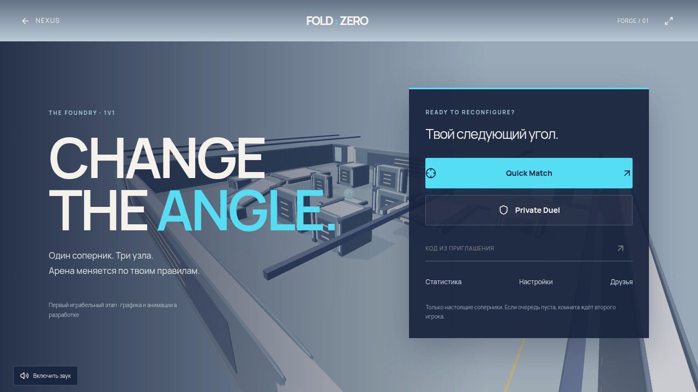
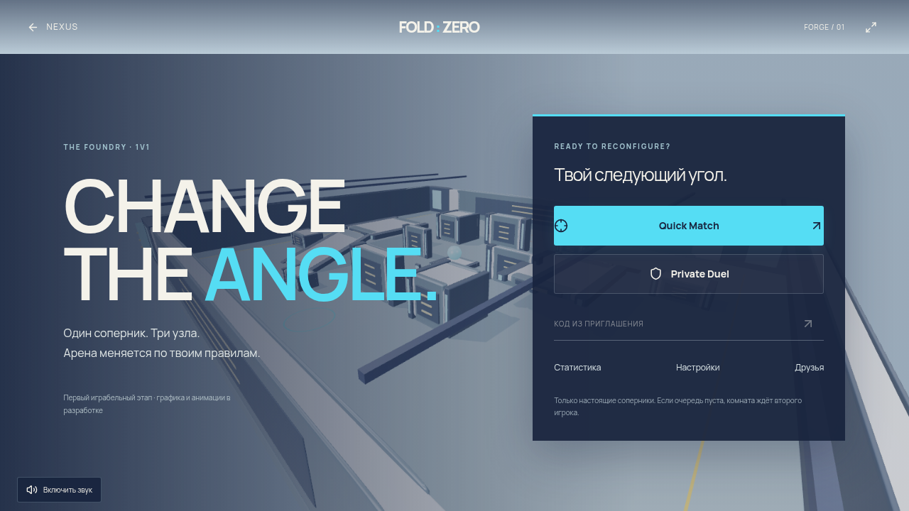

THE FOUNDRY · 1V1
FOLD: ZERO
Первый настоящий поединок. Два аккаунта, общая арена, серверные попадания и перестройка геометрии.
Открыть игру ↗Непрерывный матч
Два независимых браузера с автоматизированным обычным вводом: виртуальный геймпад и клавиатура/мышь. Это тестовые клиенты, а не запись двух людей. Пять раундов, настоящий игровой звук, серверный результат и исходная скорость воспроизведения. Сниженное внутреннее разрешение; качество игрового ПК эта запись не подтверждает.
Настоящий рендер · High / Ultra
Снимки главного меню работающей игры при DPR 1. Графика и анимации первого этапа временные.


Измерения, без обещаний
Xeon Platinum 8573C, 5 логических CPU, Chromium / SwiftShader. Короткие измерения сцены меню на программном GPU. GPU frame time и видеопамять недоступны. 60/120 FPS на игровом ПК не проверены. 1% low в overlay определяется обратной величиной p99 времени кадра.
| Режим | Буфер | FPS | Средний кадр | p99 | Draw calls |
|---|---|---|---|---|---|
| high | 1280×720 | 0.64 | 1568.8 ms | 2583.2 ms | 45 |
| ultra | 1536×864 | 0.34 | 2918.8 ms | 5683.1 ms | 45 |
Что дальше
Профессиональная художественная доработка персонажей, оружия и арены, анимации, дальнейшая звуковая полировка, баланс с людьми и измерения на физическом GPU/контроллерах. Первый играбельный этап не выдаётся за завершение всех требований.
Фактические данные и хеши файлов ↗